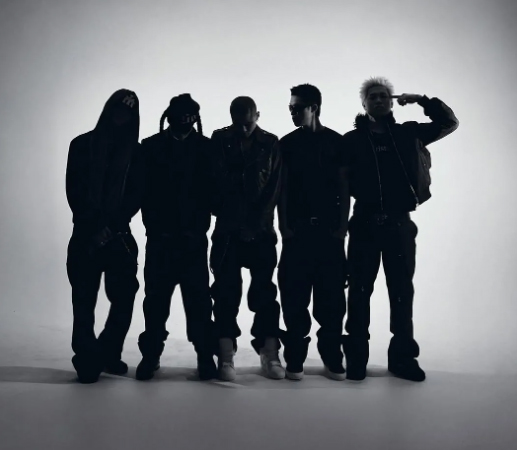
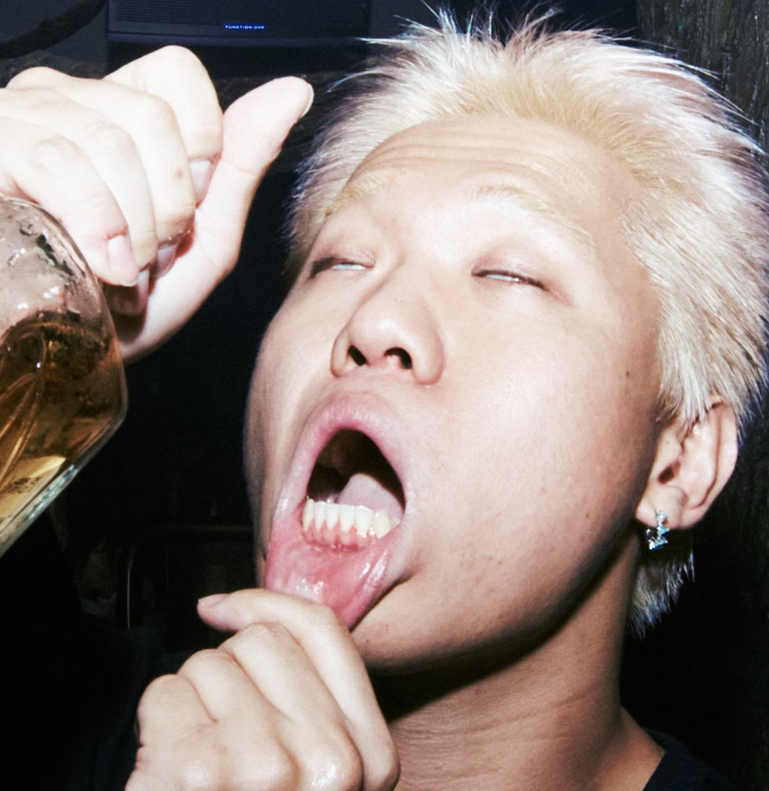
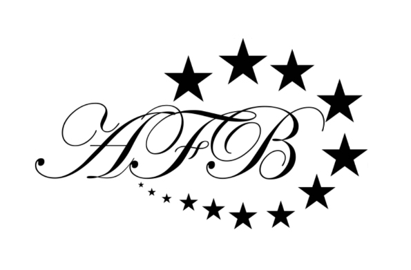
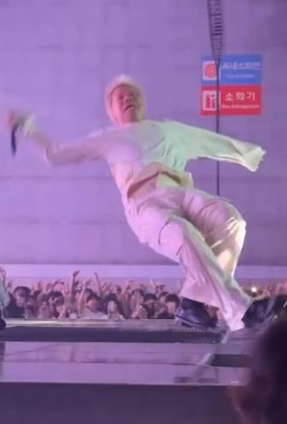
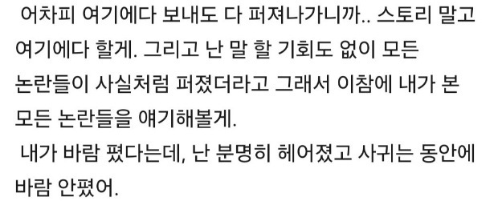
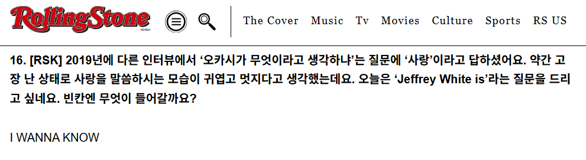

안녕하세요, 제프리 화이트님! HAUS OF MATTERS 인터뷰에 함께해 주셔서 감사합니다. 간단한 자기소개 부탁드릴게요.
POV 소속이고, 오카시라는 팀에서 활동하고 있는 제프리 화이트라고 합니다. 잘 부탁드립니다.
최근 굉장히 바쁘게 지내고 계신 것으로 알고 있는데, 여러 프로젝트를 병행하면서 정신없는 시간을 보내셨을 것 같아요. 과거 인터뷰에서는 밤을 잘 새지 않고 비교적 규칙적으로 작업하는 편이라고 말씀하셨던 기억이 납니다. 요즘에도 이런 패턴을 유지하고 계신가요?
요즘에도 그렇게 하고 있어요. 아침은 안 먹으니까 점심 먹으면서 작업실 오고, 작업하다가 저녁에 가고. 보통 그렇게 지내는 것 같아요. 앨범 작업할 때도 후반에 믹스나 마스터를 할 때는 다른 사람의 시간에 맞춰야 하니까 그때만 밤에 한 3~4일 작업했고, 루틴은 철저히 지켰죠.
오늘 인터뷰는 제프리 화이트님의 두 번째 정규앨범 [WHO CARES?]에 대한 이야기를 나누는 자리로 마련되었는데요. 어떤 작품인지 간단한 소개 부탁드리겠습니다.
쉽게 말하면 '알빠냐???'거든요. 좀 짜증이 나는 거예요. 별것도 아닌 걸 가지고 자꾸 지랄하니까, '아, 이 개~새끼들 안 되겠다. 진짜 내 속에 있는 말을 다 쏟아야겠다' 하면서 만든 앨범이에요(웃음).
말씀하신 것처럼 '알빠냐' 태도가 그대로 음악에 담긴 앨범이잖아요. 근래 오카시가 많은 주목을 받기 시작하면서 자연스럽게 주변의 여러 시선이나 이야기도 따라왔을 것 같아요. 원래도 외부의 시선을 많이 의식하는 편이셨나요?
외부 자극에 되게 예민한 편인 것 같아요.
이번 앨범을 작업하면서도 피드백을 많이 받아보셨나요?
피드백 많이 받았죠. 후반부 작업할 때쯤 일부러 링크를 다 뿌렸어요. 들어봐라, 피드백 좀 줘라, 하면서 의견을 다 받았죠. 어떤 부분을 어떻게 믹스하고 조정하면 좋겠다든지 등등? 저도 많이 듣고 수용하면서 기존보다 바뀐 부분도 많았는데, 그 사람들이 앨범을 들으면서 내 피드백이 적용됐을지 궁금해했으면 좋겠어요.
사실 1집 [SAINT]작업할 때는 다른 사람들에게 들려주지도 않았고 피드백도 안 들었거든요. 그런데 그게 약간 후회돼서 이번에는 일부러 여기저기 뿌리고, 의견들을 더 많이 들어보려고 했던 것 같아요.
[SAINT]를 작업할 때 어떤 부분이 가장 후회되셨나요?
모든 게 후회되고요. 커버도 후회되고, 가사도 후회되는 게 많아요. 특히 믹스가 제일 후회되고(웃음)..
크레딧을 보면 외부 피처링 없이 프로덕션까지 모두 제프리 화이트님이 직접 맡으셨잖아요. [SAINT] 때도 마찬가지였고요.
일단 남이랑 대화하고 의견을 맞추는 게 귀찮아요. 피처링을 받으면 믹스 수정도 계속 받아야 하고, 가사가 마음에 안 들면 또 수정해달라고 해야 하고. 그렇게 주고받는게 저한테는 스트레스예요. 사실 제가 질문지를 봤을 때 이걸 멋있게 대답해야겠다고 생각해서 준비해 놓은 답변이 따로 있거든요? 아직 내 음악이 어떤 음악인지 대중들에게 확실하게 각인시키지 못한 것 같아서, 다른 사람과 같이하기보다는 내가 할 수 있는 걸 최대한 보여주고 싶었다. 이런 취지였다고 포장하려 했는데.. 본심이 이런걸 어떡해(웃음).
이제부터 야생의 답변이 돌아오겠네요(웃음). [SAINT] 때도 비슷한 말씀을 하셨던 것 같아요. 자신의 정체가 흔들리지 않았으면 좋겠고, 사람들이 헷갈리지 않도록 '이게 내 음악이다'라는 걸 확실하게 보여주고 싶었다고.
그렇죠. 근데 플러스 본심으로 남들이랑 일하는 게 그냥 귀찮아요. 별것도 아닌 걸 가지고 쓸데없이 계속 연락해야 하고. 저는 피처링을 엄청 많이 쓰는 사람들이 신기해요. 하나하나 전부 커뮤니케이션하면서 작업한다는 거잖아요.
그렇다면 오카시의 제프리 화이트로 작업할 때와 솔로 아티스트 제프리 화이트로 작업할 때는 가장 크게 어떤 점이 다른가요?
거의 방향을 정하는 최초의 지점부터 달라서 완전히 다르죠. 일단 제 앨범은 프로덕션부터 제가 다 쳐내잖아요. 오카시에서는 제가 프로듀싱을 많이 하지 않기도 하고요. 가사도 제 앨범에서는 내이름 걸고 하는 거니까 책임도 저 혼자 지잖아요. 그러니까 욕도 하고, 말도 안 되는 개소리도 뱉는데 같이 만드는 앨범에서는 그래도 뭔가 똥을 뿌리고 다닐 수는 없으니까(웃음) 조금 자중해서 하는 것도 있죠.

오카시의 제프리 화이트로 작업할 때는 어느 정도 정해진 방향 안에서 함께 움직이는 느낌이라고 볼 수 있겠네요.
매튜가 정한 방향을 따라 달리는 것 같아요. 오카시로 작업할 때가 누군가 방향을 미리 정해주고 목적지를 향해서 달리는 거라면, 제 앨범은 방향도 제가 정하고 제가 가고 싶은 대로 달리는 거죠.
최근 라프 산두님과 메이슨홈님도 각각 앨범을 발표하며 솔로 활동을 활발하게 보여주셨고, 마지막으로 제프리 화이트님의 앨범이 나오게 됐잖아요. 두 분의 개별 활동을 지켜보면서 동료로서 자극이나 영향을 받은 부분도 있었나요?
딱히 없는데(웃음). 아 근데 피처링을 많이 쓴 게 진짜 대단하다고 느꼈어요. 방금 얘기했지만 외부 아티스트한테 뭐 받아서 작업하고 그러는 게 되게 귀찮거든요. 근데 그걸 다 해낸 게 좀 신기했어요.
어떻게 보면 자신의 앨범을 만들 때만큼은 주도권을 확실하게 가지고 가고 싶은 마음도 있는 것 같아요.
남이랑 한다고 주도권을 뺏길 것 같지는 않은데 그냥 귀찮아요. 소통하고 설득해야 하잖아요. 어차피 내 말이 맞는데. 내 앨범인데(웃음).
이번 앨범은 프로덕션에서도 거친 에너지와 속도감이 전면에 드러나는 작품이에요. 전작 [SAINT]가 비교적 정교한 프로덕션을 보여줬던 것과는 상당히 다른 지점에 있다고 느꼈는데요. 이번에는 이러한 방향으로 프로덕션의 가닥을 잡게 된 계기가 있었나요?
딱히 어떤 의도를 가지고 한 건 아니고 흐름대로 가다 보니 그렇게 됐어요. 일단 앨범을 만들 당시에 제가 화가 좀 많이 나 있어서 '화 좀 내자'라는 식으로 접근했던 것 같아요.
앨범의 중심에 자리한 감정을 하나 꼽자면 '분노'라고 할 수 있겠네요. 당시에는 어떤 상황이셨는지도 궁금해요.
일단 술 먹고 실수도 많이 했고요. 제 언행도 논란이 됐다기보다는 저를 싫어하는 사람들이 싫어할 만한 행동을 했어요. 근데 그게 실제로 활동에 있어 어떤 피해로 이어지니까, 원래는 뜬구름 잡는 소리인 줄 알았는데 진짜 영향이 가는구나 싶더라고요. 팀한테 존나 미안하기도 하고 후회도 됐죠.
그러면서도 '아니, 씨발. 내가 뭐 못 할 말을 한 것도 아니고 가만히 있는 나한테 지랄하는데 나도 말할 수 있지, 씨발.' 이런 마음으로 만든 거긴 해요.
미안함과 후회가 있으면서도 다른 한편으로는 분노가 있었던 거잖아요. 그런 상황에서 앨범의 제목을 [WHO CARES?]로 정하게 된 이유가 궁금해요.
그냥 '씨발'이에요. 그냥 씨발, 그런 양가적인 감정 없이. 그리고 '나답게 살자'고 다짐하는 의미도 있긴 해요. 제가 주변을 너무 많이 신경 쓰고 눈치도 많이 보는 편이니까 스스로한테 그렇게 살지 말라고 혼내는 것도 있고요. 눈치 보지 마, 그런 거죠.

약간 이번 앨범 관련 사진들도 이런 막나가는 감성이 묻어나는 것 같아요(웃음).
1집 당시에는 커버가 마음에 안 들어서 앨범을 내기가 싫었어요. 그래서 이번에는 커버를 먼저 생각하고 앨범을 만들었거든요. 처음부터 무조건 얼빡샷 크게 찍고, 입술 안쪽에 타투를 한 모습을 생각했어요. 근데 막상 하려고 하니까 너무 무서운 거예요(웃음). 타투는 못 하겠으니까 그냥 그대로 가자 해서 파티하는 날 취해있는 모습을 그대로 찍었어요. 공연 끝나고 한 시간 정도 술을 마신 다음에 가시죠! 해서 찰칵.
촬영한 사진을 별다른 보정 없이 바로 사용하신 건가요?
손도 안 봤어요. 크기만 적당히 자르고 뷰티 보정 같은 거 없이 날것 그대로예요.
어떻게 보면 또 다른 의미의 'Purity'네요(웃음).
올해 힙합플레이야 페스티벌 당시 두 장의 앨범을 발표하겠다고 예고하셨고, 그중 하나가 [WHO CARES?]인데, 사실 앨범에서 다뤄지는 이야기들은 대부분 그 이후에 벌어진 것으로 알고 있어요.
원래는 다른 작품을 구상하고 있었고, 꽤 많이 만들어 놨어요. 굳이 장르를 따지면 R&B나 얼터너티브에 가까운 싱잉이 많이 들어간 앨범이었는데, 내용도 다 사랑 노래였고요. 그 앨범을 먼저 내고 이후에 랩 앨범을 내려고 했는데, 여러 사건들이 터졌으니까 지금 상황에서는 랩을 보여주는 게 더 나을 것 같다는 생각이 든 거죠. 뭔가 흐름이 자연스럽게 [WHO CARES?]를 먼저 만들게 하더라고요.
[WHO CARES?]는 당시의 상황과 감정이 새롭게 빚어낸 작품이라고도 볼 수 있겠네요. 그때 감정으로 사랑 노래를 발표했다면 앨범의 분위기에 맞춰 프로모션하고 이야기를 이어가야 했을 텐데, 그것도 쉽지 않았을 것 같고요.
그런 것도 있죠. 못 했을 것 같아요. 원래 준비하던 앨범을 더 만들고 싶지 않았어요. 애초에 [WHO CARES?]가 어떤 방향으로 구상해놓고 만든 작품이라기보다는, 그때그때 본능적으로 '빠바바박' 만든 거거든요. 많이 다를 거예요.
그렇다면 원래 준비하던 앨범은 잠시 발매가 미뤄진 상태이고, 추후에는 공개할 계획이 있으신 건가요?
무조건 올해 안에 낼 거예요. 아마 연말쯤 내지 않을까 싶어요.
그렇다면 [WHO CARES?]의 실질적인 작업 기간은 어느 정도였나요?
1번 트랙은 좀 예전에 만든 곡이에요. 2025년 1월에 만들었고, 나머지는 거의 올해 6~7월 즈음에 만들었어요. 7월 말부터는 새롭게 추가된 곡이 없었고, 그때부터 계속 구조적으로 보강하다가 8월쯤 믹스해서 완성된거죠.
대부분의 곡을 한두 달 정도 안에 만드신 거네요.
말씀하신 1번 트랙 "ROCK OUT"은 다른 곡보다 훨씬 일찍 만들어진 만큼 앨범 안에서도 확실히 결이 다르게 느껴졌어요. 제프리 화이트님의 모습이 다른 곡들에 비해 조금 소극적이기도 하고요.
특히 가사가 그렇죠.
'한마디를 몇 시간씩 고민한다'는 식의 가사가 등장하는데, 바로 다음 트랙 "YUTA"부터는 태도가 뒤집히면서 [WHO CARES?]의 주된 감정이 본격적으로 튀어나오잖아요. 처음부터 끝까지 이러한 방향으로 앨범의 서사를 끌고 가겠다는 계획이 있었나요?
앨범 전체를 어떻게 끌고 가야겠다는 계획은 크게 고민하고 싶지 않았어요. 어떤 서사를 만들어야겠다는 생각보다는 "ROCK OUT"은 어쨌든 내고 싶었던 곡이었고, 이 곡으로 시작해서 "YUTA"서부터 변화하는 모습을 보여주는 것도 가사적으로 재밌을 것 같다는 생각 정도?
"ROCK OUT"과 "YUTA" 사이에는 실제로 1년 정도의 시간차가 있는 거잖아요. 그사이 제프리 화이트님에게도 내적인 변화가 많이 찾아왔다고 생각하시나요?
많이 변했죠. 그때의 저는 자신이 없으니까 그런 소극적인 가사가 나왔던 것 같아요. 그래서 "YUTA"부터는 '아, 나 여기까지 도달했다. 이제 내가 할 수 있는 말이 이만큼 늘어났으니까 달리겠다.' 이런 느낌인 것 같아요.

"YUTA"라는 제목의 의미도 궁금했어요.
제가 AFB라는 브랜드의 벨트를 차고 일본에 간 적이 있어요. 예전부터 AFB의 파운더를 팔로우하면서 되게 좋아했거든요. 이름이 니시야 유타(Yuta Nishiya)인데, 약간 팬심이 있었죠. 제가 <쇼미더머니>에도 출연하고 여러 활동을 하다가 밀리 형이랑 일본에 갔는데, 그 사람이랑 같이 술을 먹게 된 거예요. 와, 내가 존나 좋아했던 사람이랑 이제 같이 술을 먹을 수 있네? 너무 신기하잖아요. 내가 이제 유타의 이름을 부를 수 있구나! 라는 생각도 들었고요. 제게 있어 굉장히 상징적인 만남이었어요. 그래서 곡 제목으로 써도 되냐고 개인적으로 DM을 보내서 허락받은 거죠.
어떻게 보면 '내가 지금 이만큼 성공했다'는 걸 보여주는 하나의 상징이 유타라는 인물이었던 거네요.
좀 불친절한 트랙 제목이긴 하죠. 제가 얘기하지 않으면 듣는 사람이 어떻게 의미를 알겠어요?(웃음)
이제야 수수께끼가 풀렸네요. 이 인터뷰를 보는 분들만 알 수 있는 이야기네요(웃음).
다음은 이번 앨범의 타이틀곡 "개새끼"입니다. 제목부터 굉장히 강렬합니다.
말 그대로 강렬하잖아요. 그래서 이렇게 제목을 지었습니다.
훅에서 '제프리 완전 개새끼 188 바닥에 패대기'라는 가사가 계속 반복되잖아요. 이 가사가 직접적으로 앞으로 나오기보다는 뒤에 작게 깔린 구성이더라고요. 공연이나 클럽에서 관객들이 직접 따라 부르는 것까지 염두에 두셨나요?
완전 의도한 거죠. 이거 소리 작으니까 너네가 불러야 돼. 가사 다 따라 부르는 게 아니더라도 그냥 계속 '개새끼'만 외쳐도 되니까(웃음), 관객들이 따라 할 수 있는 파트를 남겨놓은 거죠.
'제프리 완전 개새끼'는 마지막 트랙에서도 가사로 다시 등장하고, 앨범 전반에서도 중요하게 느껴지는 문장이에요.
말하는 대로 된다고, 제가 의도한 건 아닌데 어느 순간 제 이미지가 약간 여고딩 픽, 멘헤라 픽 같은 게 됐더라고요. 아니 근데 내가 픽 당하고 싶어서 그리된 것도 아닌데 왜 이렇게 사람들이 나한테 지랄이지? 그냥 계속 그 생각밖에 없어요. '좆지랄들을 하는군.' 그래, 나 개새끼일 수 있다. 그러니까 내가 판 깔아줄게. 내가 개새끼 엔터를 한 번 열어줄게. 이런 느낌인 거죠(웃음).
그런데 "개새끼"라는 곡이 마냥 속 시원하게 모든 걸 쏟아내는 곡으로 들리지는 않았어요. 오히려 전부 밝힐 수 없는 이야기들이 있어서 어느 정도 답답함이 남아 있는 곡처럼 느껴지기도 하거든요.
뭐, 그냥 많은 상황에서 제가 개새끼일 수 있는 거죠. 굳이 따지면 구체적으로 다 말할 수 없는 여러 상황을 함축하는 뜻에 더 가까운 것 같아요.
앨범 전체에서는 WHO CARES? 라고 이야기하면서도 중간중간 자신을 둘러싼 이슈를 의식하는 듯한 가사들이 등장하잖아요. 실제로 여러 일을 겪으면서 나름대로 대처하는 방법에 대해서도 고민해보셨나요?
고민해서 얻은 방법은 그냥 '무대응'인 것 같아요. 그냥 어떤 일이 있었을 때 그걸 너무 마음에 두지 말고 잘 살아가자.
자신이 마음에 들지 않는 것들을 굉장히 공격적으로 이야기하기도 해요. "WHO MADE IT?"에서는 '고샤 룩'이나 '다크웨어'로 이야기되는 패션 스타일을 직접적으로 언급하셨죠.
제가 볼 때는 다 짜치는데, 그거 막 멋있다고 빨아주고 캬~높다! 이지랄하는 게 진짜 같잖은 거예요. 가사를 보면 "애기 같은 남친, 너 혹시 베이비시터?" 이런 것도 있거든요. 진짜 개이상한데 그걸 너무 좋아하는게 이해가 안돼서 공격적으로 쓴 거죠.
그런 모습을 바라보면서 느꼈던 생각을 가감 없이 공격적으로 꺼내놓은 거네요.
제일 중요한 가사는 '남자들 더 이상 셔츠를 안 입어' 이거거든요. 저는 그게 좀 웃겨요. 남자들이 셔츠를 안 입는다는 게. 뭐 정장까지 입을 필요는 없지만 '셔츠'라는 아이템이 있잖아요. 그런데 어느 순간부터 그걸 입으면 안 된다고 약속한 것마냥 모두가 안 입으니까 그게 좀 이상한 것 같아요.
그리고 발음을 일부러 꼬아서 뱉는 부분도 인상적이었어요. 마치 술에 취한 것처럼 들리기도 했는데요.
너무 정직하게 말하면 듣는 재미가 좀 없으니까 일부러 발음을 꼬아봤어요.
앞서 말씀하신 작업 과정과도 연결되는 것 같네요. 이번 앨범은 복잡하게 계산하기보다 '이렇게 하면 재밌겠다'는 생각이나 당시의 감정에 따라 본능적으로 만들어나간 작품에 가까운 것 같아요.
크게 뭘 계산하거나 그러지는 않고, 진짜 그냥 '빠바바박' 만든 것 같아요.
다시 패션에 관한 이야기로 돌아가볼게요. 앞서 이야기된 특정한 스타일이 유행하는 경우가 많잖아요. 이러한 유행에 휩쓸리는 것과 자신의 취향을 바탕으로 트렌드를 기민하게 받아들이는 것 사이에는 어떤 차이가 있다고 생각하시나요?
저는 오히려 사람들이 '유행을 몰라야 된다'고 생각해요. 유행을 알고 어떤 행동을 하면 결국 알고 따라 하는 거고, 반대로 아니까 의도적으로 따라하지 않게 되는 거잖아요. 그냥 내가 하고 싶은 걸 하면서 바깥세상에 있는 것들을 너무 의식하지 않는 게 더 좋은 것 같아요. 그래서 저도 '무슨무슨 패션', 음악적으로는 '무슨무슨 장르' 이런 걸 되도록 안 보려 하거든요. 특정한 장르로 정의하면 그게 왜 이런 장르지?라는 생각도 들고요. 정작 그 사람은 자기 음악을 그런 장르로 가두기 싫을 수도 있는 거잖아요. 그냥 뭔가를 그렇게 묶어버리는 게 싫어요.
제프리 화이트님의 음악을 '어떤 장르와 사운드에 기반한 음악'이라고 카테고리제이션 하는 것 자체도 별로 좋아하지 않으시겠네요.
저도 진짜 모르거든요. 아예 몰라요. 그리고 그렇게 묶는 게 좀 웃기지 않아요? 제가 랩을 한 곡도 많지만, 방금 이야기한 "WHO MADE IT?" 같은 건 막 랩을 하는 곡도 아니잖아요. 그래서 사실 이걸 랩, 힙합이라고 부를 수 있는지도 잘 모르겠어요. 저도 이게 무슨 장르인지 모르니까 남들이 어떠한 음악을 한다고 하면 그런가 보다~ 하긴 하는데, 나한테 직접 '너는 이래서 이런 음악을 하는 사람이야'라고 하면 '뭐래 병신; 난 그렇게 만든 게 아닌데;;' 이런 마음가짐이 되는 것 같아요.
그런데 어떻게 보면 지금 활동하는 씬 자체가 트렌드에 굉장히 민감하잖아요. 장르로 구분하지 않더라도 특정한 시기에 유행하는 사운드는 분명히 존재하고요. 그런 흐름조차 크게 신경 쓰지 않고 작업하는 편인가요?
이번 앨범도 그냥 '아, 진짜 아무것도 모르겠다. 그냥 끌리는 거 해야겠다.' 해서 만들었어요. 그런 걸 신경 썼으면 앨범 중간에 붐-뱁트랙도 넣지 말았어야 하는 거고요. 다른 앨범에서는 안 그럴 수도 있는데, 이번에는 진짜 제 마음 가는 대로 작업했어요.
장르에도 얽매이지 않고 특정한 사운드의 규정에도 얽매이지 않은 채, 온전히 제프리 화이트의 음악을 보여주는 데 집중한 작품이라고 볼 수도 있겠네요. 그러한 태도가 타이틀과 동명의 트랙인 "WHO CARES?"와도 맞닿아 있는 것 같아요. 앞선 곡들에서 자신의 감정을 공격적으로 쏟아냈다면 "WHO CARES?"에서는 '이제는 신경 쓰지 않고 내 행복을 찾아가겠다'는 방향으로 조금씩 시선이 옮겨가는데, 이 곡에서 이야기하는 제프리 화이트님의 '행복'은 무엇인가요?
그때부터 너무 공격적으로만 가기보다는 '그럼 나는 어디로 나아가야 하지?'라는 고민이 조금씩 들어가는 것 같아요. 일련의 사건들이 벌어지고 나서 후회만 해서는 앞으로 나아갈 수가 없잖아요. 그래서 앞으로 어떻게 해야 할지를 생각했고, 아까 말했듯이 무대응으로 가기로 한 거죠.
그러면 이러한 외부 잡음을 무시까고 나는 어디로 가야 하느냐. 제가 원래 가야 하는 길은 이런 것들에 흔들리지 않고 그냥 좋은 음악을 만들고, 활동을 열심히 해서 사람들을 행복하게 해주는 거라고 생각해요. 나한테 오는 것들을 하나하나 튕겨내서 상대방까지 안 좋게 만들지 말고 일단 내가 하는 걸 잘하자. 그런 생각이 조금 들어간 것 같아요.

방금 말씀하신 것처럼 이번 앨범에는 실제로 제프리 화이트님을 둘러싼 이슈들이 많이 녹아들어가 있습니다. 술을 마시고 벌어진 일부터 HIPHOPPLAYA FESTIVAL에서 넘어졌던 일까지요. 특히 '미끄덩 화이트'는 "WHO CARES?"와 "DEMON TIME"에서도 계속 이야기가 이어지죠.
진짜 말도 안 되게 쪽팔렸어요. 거기에 플러스로 그날 제가 취해 있었기 때문에 그냥 모든 게, 진짜 말도 안 되게 개쪽팔렸어요. 근데 그 쪽팔림의 단계가 극에 달하니까 이제는 저도 보면 웃긴 거예요. 그리고 휘민이 형 무대에서도 가사 절고 다른 걸 부르고 그랬거든요. 그때부터 더 이상 이러면 안된다는 생각이 들었던 것 같아요.
어떻게 보면 굉장히 자전적인 앨범이기도 하네요.
완전 자전적이지 않나요? 사실 이것 말고 딱히 할 얘기도 없었어요. 최근에 저한테 있었던 일들이 이런 것들이니까 그냥 그 이야기들을 최대한 앨범에 담으려고 했던 것 같아요.
앞서 여러 일을 겪으면서 결국 '무대응'이라는 방법을 택했다고 말씀하셨잖아요. 실제로 이전에는 직접 해명하기도 했지만, "WHO CARES?"에서는 내가 아무리 해명해도 사람들은 결국 믿고 싶은 대로 믿을 테니 더 이상 설명하지 않겠다는 태도로 바뀐 것처럼 느껴졌어요.
정확합니다.

결국 다른 사람들이 무엇을 믿든 거기에 계속 대응하기보다는 자신의 행복을 찾아가는 것을 선택한 셈이네요.
정확히 맞습니다. 그냥 내가 아무리 얘기해도 안 듣잖아요(웃음). 그거 가지고 하루죙일 지랄 옘병 천병을 해대니까 짜증나잖아요. 그러니까 이제는 아~ 모르겠고! 약간 이런 마인드입니다.
(웃음) 그런 감정과 태도가 모두 응축된 결과물이 [WHO CARES?]라고 볼 수도 있겠네요. 이거랑 별개로 재밌는 장치들도 많아요. 가령 밈들을 샘플로 가져와 활용했다던가.
"ROCK OUT"에서는 유튜브에서 찾은 경기장 관중 소리 같은 것을 넣었고, "개새끼"에서는 ‘야, 개 짖는 소리 좀 안 나게 해라’ 외치는 것도 있고(웃음). "WHO MADE IT?"에도 ‘치킨 누가 만들었어??’ 넣었고요. 그정도 선에서 활용한 것 같아요.
이렇게 여러 소리를 가져와 활용하는 것도 결국 ‘재미’의 측면이 큰 건가요?
그렇죠. 그냥 밈을 가져다 쓰는 게 좀 웃긴 것 같아서요. 샘플링할 때 클리어 비용도 안 드니까(웃음).
그렇다면 이번 앨범의 전체적인 사운드 역시 그때그때의 감정과 즉흥적인 선택을 바탕으로 만들어나간 건가요?
저는 뭔가를 따로 적어놓는 건 귀찮아서 잘 못하고, 그냥 머릿속 한켠에 둬요. "개새끼"처럼 개빠른 개버 같은 사운드도 만들어보고 싶다는 생각도 있었고, G2, 키드애쉬의 [Project : Brainwash]시절 사운드 같은 것도 구현해봐야겠다는 생각이 있었는데 이런 식으로 쌓아놨던 아이디어를 앨범 작업할 때 하나씩 푼 거죠.
그렇다면 사운드적으로 반드시 하나의 유기성을 만들어야 하는 앨범은 아니었던 거네요. 그동안 해보고 싶었던 여러 사운드를 자유롭게 꺼내놓는 방식에 가까웠고요.
그렇죠.
이어지는 "QUAKE"는 앨범 통틀어 힙합의 문법에 가장 충실한 트랙이라고 느껴졌어요. 근데 가사에서는 무대 위 오카시의 폭발적인 모습을 그려내고 있는데, 비트의 분위기와 약간 대비되는 느낌이에요.
2000년대 스타일의 트랙에 그렇게 과시하는 가사를 쓰면 좀 위트 있겠다는 생각이 있었어요. 이런 비트는 녹음하면서도 느낀 건데, 막 랩을 세게 뱉는 것보다 속삭이듯이 하는 게 더 매력 있더라고요. 처음부터 거창한 계획을 다 세우지는 않고 이것저것 해보자 정도로 생각해두는데, 이게 직접 적용이 되면 실제로 작업하면서 많이 바뀌는 것 같아요.
"QUAKE"에서는 무대 위 오카시의 폭발적인 에너지를 보여주는 동시에 오카시라는 집단과 자신의 음악에 대한 애정도 느껴져요. 제프리 화이트님에게 '음악'과 '오카시'는 각각 어떤 의미인가요?
갑자기 너무 뻔하고 딥한 질문이 들어왔는데(웃음). 음악은 재밌는 놀이터, 재밌는 놀이, 장난감 같은 것 같고요. 오카시는 거기서 같이 노는 친구들인 것 같습니다.
사실 다른 인터뷰에서는 더 나아가면 '제프리 화이트님에게 힙합이란?' 이런 질문도 들어가는데(웃음).
아..(웃음).
이건 대답해주지 않으셔도 괜찮습니다. 저희도 질색하는 질문이에요(웃음).
근데 저는 사실 제가 진짜 힙합을 하는지는 잘 모르겠어요. 한국인이 '힙합을 한다'고 말하는 것 자체가 조금 어불성설이지 않나 싶기도 하고. '힙합 음악'을 할 수는 있어도 제가 힙합의 삶을 살아왔던 건 절대 아니기 때문에, 그걸 이야기하는 건 항상 조금 조심스럽더라고요 저는.
사실 그렇죠. 굉장히 다양한 스펙트럼의 음악을 다루고 계시잖아요. "QUAKE"의 가사 중 '불안하지 않아 이젠 집이 조용해도'라는 구절도 궁금했어요.
제가 스무 살 때부터 거의 항상 여자친구가 있었거든요. 여자친구가 없었던 기간이 제일 길어봤자 한 달 정도였어요. 그러면 거의 항상 집에 누군가 있는 거잖아요. 근데 제가 원래 불안한 마음이 되게 컸어요. 저는 그게 제가 하고 있는 일에서 큰 성공을 이루지 못했기 때문에 생기는 불안인 줄 알았거든요. 그런데 <쇼미더머니>에도 나가고, 돈도 잘 벌고 있는데 이 불안이 없어지지 않는 거예요. 그때 이 불안의 근원은 무언가를 성취하지 못해서 오는 게 아니라 그냥 내 안에 내재되어 있는 기질이라는 걸 알게 됐어요. 그걸 받아들이고 나니까 이제는 여자친구가 없어도, 집에 혼자 있어도 별로 불안하지 않더라고요.
직접적으로 자신의 이야기를 드러내는 가사도 있지만, 이렇게 본인만 의미를 알 수 있는 장치들도 앨범 곳곳에 숨겨놓으신 거네요.
그냥 다 알면 또 너무 쉽잖아요. 재미없습니다(웃음).
'또 실수하면 안돼, 근데 어떡해'라는 가사도 있잖아요. 이번 앨범에 양가적인 감정을 담은 건 아니라고 말씀하셨지만, 이 구절만 놓고 보면 '다시는 실수하면 안 된다'는 생각과 '그래도 어쩔 수 없지'라는 태도가 함께 있는 것처럼 느껴지기도 해요.
여기서 그려내는 심정 자체는 양가적이라고 할 수 있는데, 뒤에 '근데 어떡해'라고 하는 건 [WHO CARES?]의 정신이니까요. 뭐 그럴 수도 있지- 느낌이죠. 결국 이 가사도 앨범에서 이야기하는 본질을 말하는 셈이죠.
결국 [WHO CARES?]의 태도에 도달하기까지의 과정처럼 볼 수도 있겠네요.
이러한 장치가 특히 잘 드러나는 곡이 "GALA 6:9"인 것 같아요. 제목부터 갈라디아서 6장 9절을 인용하고 있습니다.
제가 다니던 고등학교가 기독교 학교였는데, 교실 뒤에 이 구절이 붙어 있었어요. 그때 보고 뭔가 좋다고 생각해서 언젠가 한 번 쓰면 좋겠다는 생각이 들었는데, 이번에 쓰게 되었네요.
'선을 행하되 낙심하지 말지니 포기하지 아니하면 때가 이르매 거두리라'는 내용이 나오잖아요. 저는 여기서 특히 '선을 행한다'는 표현에 눈길이 갔는데요. 제프리 화이트님은 이 곡에서 이야기하는 '선'을 어떻게 받아들이셨나요?
저는 그냥 자기 인생을 제대로 못 살고, 자기가 좋아하는 것도 제대로 못 찾는 게 오히려 '악'인 것 같아요. 이 곡에서만큼은 내가 원하는 삶을 살아가는 것이 '선'이라고 생각했어요. 물론 성경에서는 다른 뜻이겠지만요.
그렇게 이어지는 마지막 트랙 "ROSE"는 앞선 곡들의 가사들을 인용하면서 앨범의 이야기를 한데 모으는 곡처럼 느껴졌는데요. '그토록 바라는 삶'에 대해서도 이야기하잖아요. 제프리 화이트님이 바라는 삶은 구체적으로 어떤 모습인가요?
정점에 도달하는 거죠. 그게 제가 바라는 거니까 그게 언제 오려나~ 하는 거예요.
사랑하는 사람과 함께하는 순간에 행복을 느끼면서도 결국 '나는 가야 할 길이 있다'며 다시 자신의 목표를 향해 나아가는 내용이 등장하기도 하죠.
예전에 여자친구를 사귀면서 이 사람이랑은 결혼해도 되겠다, 음악 말고 다른 일 해도 행복할 것 같다는 생각을 해본 것이 있었어요. 근데 그 생각이 드는 순간 거세당하는 것 같은 기분이 들더라고요. 아니 그러면 내가 뭐 하려고 여태까지 이걸 했지? 이런 기분. 물론 제가 걸어온 시간이 의미가 없어지는 건 아니지만 결국 그 시간을 버리고 떠나야 하는 거잖아요. 그러고 싶지 않더라고요. 그래서 사랑도 중요하지만 궁극적으로는 내 안에 있는 목표를 향해서 한 번 더 가보자. 그런 마음이 담긴 이야기예요.
반대로 스스로 '내가 지금 제대로 가고 있는 게 맞나?'라고 흔들렸던 시기도 있었나요?
POV 오기 전에 그런 느낌이었죠. 어떤 앨범을 내도 활동이라 할 만한 것도 없었고, 반응도 딱히 없었고. 그때는 진짜 내가 잘 가고 있는지 엄청 흔들렸어요. 근데 이런 흔들림조차 음악으로 만들면 또 길이 되니까 이제는 '그냥 하면 된다' 마인드로 바뀐 것 같아요. 어찌 됐든 내가 나아가면 거기가 길이니까. 고민하고 아파할 시간에 그냥 해라, 인 거죠.
계속 앞으로 나아가지 않으면 오히려 불안해하는 성향이신 것 같아요.
예전에 "I WANNA KNOW"라는 곡에서 쓴 가사 중에도 '말리지 마 다시 멈추다간 가라앉고'가 있어요. 어떤 상어는 헤엄을 멈추면 죽는다고 하잖아요. 계속 헤엄을 쳐서 물이 아가미로 들어오게 해야 호흡할 수 있다고 하더라고요. 그게 진짜 저 같은 거예요. '멈추면 죽는다'는 생각이 그때부터 머릿속에 있었던 것 같아요.
실제로 일이 없거나 무언가를 기다려야 해서 가만히 있어야 할 때도 불안을 느끼는 편인가요?
일이 없을 때는 뭔가 목표를 가지고 게임을 했어요. 게임 속에서 무언가를 키우는 게 인터넷 세상에서 또 다른 나의 자아를 키우는 것 같았거든요. 그런데 이제는 게임을 하지 않아도 오프라인에서 제가 계속 크고 있잖아요. 그게 너무 재밌죠.
이렇다면 지금 당장 이루고 싶은 단기적인 목표도 있나요? 올해 이미 많은 것을 이루셨지만, 여기서 한 발 더 나아간 다음 목표가 궁금하네요.
일단 올해 오카시로 매출 10억. 그리고 계약 기간 안에 연매출 100억(웃음).
구체적이네요(웃음). 원래 목표를 세우실 때 구체적인 수치와 기간까지 정해두는 편이신가요?
보통 그렇게 하지는 않는데, 이번에는 그렇게 해야 할 것 같아서 정했어요. 제가 AP 알케미에 들어갈 때는 '크루로 회사와 계약하기'가 목표였거든요. 근데 막상 그게 이루어지니까 재미가 없어지는 거예요. 앞으로 뭐 하지? 싶어서 이번에 될랑 말랑한 걸 해보자고 정한 게 10억이고, 이건 절대 안 될 것 같은데? 그래도 가야지! 하고 정한 게 100억이에요.
쉬이 달성하기 어려운 목표를 세워두는 것 자체가 계속 움직일 수 있는 동력이 되기도 하네요.
근데 그게 또 될 것 같으니까 흥분되고 할 맛 나죠. 존나 행복해요(웃음).
POV에 합류한 이후 약 1년 동안 활동하면서 주변 환경에도 많은 변화가 있었잖아요. 이번 앨범까지 만드는 과정에서 '나에게 이런 면도 있었구나' 하고 새롭게 깨달은 부분도 있었을까요?
저는 제가 정상인처럼 잘 살아가고 있는 줄 알았는데 <통통배>에 나가고 나서 좀 깨달은 게 있어요. 나도 몰랐던 썰들이 하나둘씩 튀어나오는 거예요. 그걸 다 듣고 보니까 진짜 내가 병신 같아서 어느 정도 조절은 해야겠다는 생각을 했죠(웃음).
아, 저도 선원이라 봤습니다(웃음).
술 먹고 있는데 옆 테이블이 시끄럽다고 테이블을 쾅 쳤다든지... 저 진짜 기억 하나도 안나고 그냥 지나갔는데, 다른 사람들에게는 굉장히 기억에 남을 만한 일이잖아요. 저는 항상 저보다 다른 애들이 더 이상하다고 생각했거든요(웃음). 근데 나 진짜 문제가 좀 있는 녀석이구나, 하면서 반성하게 됐죠.
이런 이야기까지 들으니까 앨범이 좀 새롭게 다가오네요(웃음). 그렇다면 [WHO CARES?]를 통해 궁극적으로 이야기하고 싶었던 것이 무엇이었는지 다시 한 번 정리한다면 어떻게 이야기할 수 있을까요?
그냥 '내가 하고 싶은 대로 살아야겠다'고 생각했으면 좋겠어요. 저도 장르를 딱히 정해두지 않고 하고 싶은 음악을 하면서, 눈치 보지 말고 원하는 걸 하자고 이야기하잖아요. 제 음악을 들은 분들도 '그럼 나도 한 번 그렇게 해봐야겠다'는 마음이 들 수 있도록 좋은 영향을 끼쳤으면 좋겠습니다. 그냥 솔직하게 살았으면 좋겠어요. [WHO CARES?]라고 해서 그냥 '니 좆대로 살아라'는 이야기는 아니고요(웃음).
내가 좋아하는 건 좋아한다고 할 수 있고, 싫으면 싫다고 하고, 그런 걸 솔직하게 말하는 게 중요하다고 생각해요. 대부분의 문제들도 솔직하게 이야기하면 대부분 해결돼요. 그래서 그렇게 살았으면 좋겠어요. 최근에 고등학교 동창들을 만나도 자기가 뭘 좋아하는지 모르겠다고 하는 애들이 있거든요. 뭘 몰라. 알면서 안 하는 거면서. 저는 그런 게 좀 안타까워요.
지금까지의 이야기를 종합해보면 [WHO CARES?]는 단순히 '내 마음대로 살겠다'는 것을 넘어 자기 자신에게 솔직해지자는 메시지에도 가까운 거네요.
맞아요. 정말 다들 솔직하게 살았으면 좋겠어요.
결국 [WHO CARES?]는 자신이 무엇을 좋아하고 어떤 사람인지를 알아가는 과정이라고 볼 수 있겠네요.
그게 되게 중요한 것 같아요.

예전 2024년 롤링스톤 코리아 인터뷰에서 'Jeffrey White is ______'라는 질문에 'I WANNA KNOW'라고 답변하셨던 게 기억나요. [WHO CARES?]를 완성한 지금, 다시 같은 질문을 드려보고 싶어요. Jeffrey White is ______?
개새끼(웃음).
좋습니다(웃음). 그러면 앨범 발매 이후 예정된 뮤직비디오나 공연 등 추가적인 활동이 있다면 소개 부탁드릴게요.
9월 10일에 볼레로에서 파티를 할 거고요. 앨범을 듣고 오시면 클럽에서 개새끼가 된 저를 발견할 수 있고, "개새끼"를 다 같이 따라 외치는 재밌는 광경이 나오지 않을까 싶어요. 그리고 릴스 같은 것도 많이 찍어보려고요. 그냥 웃긴 동영상이요. 이건 제 사심인데 애들 담배 피우는 걸 싫어하니까 담배 막 자르고 도망가는 거 있잖아요. 그런 것도 그냥 하려고요.
(웃음) 콘텐츠도 앨범처럼 너무 복잡하게 접근하기보다 직관적이고 재미있는 방향으로 만들고 싶으신 거네요.
그냥 재미있었으면 좋겠어요. 어렵고 복잡하고 많은 의미를 담으려 한 앨범도 아닌지라 콘텐츠도 그냥 직관적인 걸로 만들고 싶어요. 클럽에 가서 노는 것 같은 거요.
앨범을 듣다 보면 공연장에서 마음껏 뛰어놀 수 있도록 판을 깔아주는 음악이라는 느낌도 들어요. 실제로 공연에서의 모습을 많이 고려하면서 만드셨나요?
그렇죠. 공연을 많이 염두에 뒀어요. 라이브에서 어떻게 들릴지를 약 70% 비중을 두고 작업한 거 같아요. 만들기 전부터 '공연에서 신나는 곡을 만들어야지!' 이런 건 아닌데, 만들면서 어떻게 해야 라이브에서 더 신날지를 계속 생각한 거죠. 뭘 넣거나 빼보면서 드럼 사운드도 만들어보고.
이제 인터뷰도 거의 마무리됐는데요. 마지막으로 이번 앨범을 들을 때 '이 부분만큼은 꼭 체크해줬으면 좋겠다' 싶은 포인트가 있을까요?
알아서 잘 들으시고(웃음). 신나게 즐기고 싶으면 클럽에 와서 들어라.
9월 10일에 열리는 파티에 와서 직접 들어보라는 거네요(웃음). 그럼 마지막으로 HAUS OF MATTERS 독자분들과 제프리 화이트님의 팬분들에게 인사 부탁드리겠습니다.
인터뷰 전에 개인적으로 말씀드리긴 했지만, HAUS OF MATTERS는 뭔가를 평가하고 재단한다는 느낌보다는 '이걸 한 번 들어봐라'라는 식으로 음악을 소개해 주셔서 굉장히 좋은 것 같아요. 그래서 많이 즐겨봐 주시면 좋을 것 같고요.
내 팬들은 그냥 10일에 보자. 10일에 보고 제대로 놀고 집에 가지 말자.
인터뷰에 참여해주신 제프리 화이트님께 다시 한 번 감사드립니다!